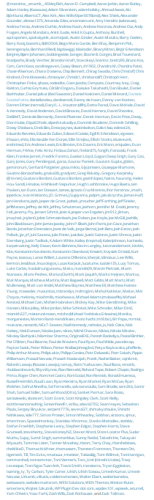

Daniele Scasciafratte
- Co Founder Codeat - Full Stack Developer
- Mozillian & Mozilla Reps & Participation Leader
- Utente Debian Linux since 2009
- WordPress Contributor/Developer/Translator
- Open Source Addicted
- Industria Italiana Software Libero Vice President
- Writer for Italian sites: AndMore, ChimeraRevo and TechEconomy
- Ticket
- Developer Environment
- Keywords
- Let's do a patch
- Upload the patch
- Cool stuff
Varying Vagrant Vagrants
- Nginx, MySQL, OpCache, Memcache, xDebug
- PHPMyAdmin, PHPMemcachedAdmin, WebGrind, MailCatcher
- PHPUnit, WP-CLI, PHPCodeSniffer, Composer
- WP Stable, WP Trunk, WP Trunk with dev files, WP Trunk build files
- Super Powerful Dashboard
- Every website have their log file
- https://github.com/Varying-Vagrant-Vagrants/VVV
See it in action!
- needs-patch/has-patch
- dev-feedback
- needs-testing
- needs-unit-tests
- needs-docs
- needs-codex
Create the patch
svn diff > [# ticket].[# patch].patch
Send the patch
Explain the difference respect the last patch
Update the various keyword
Wait
Wait..
Partecipate in the ticket
Wait...
WordPress Release Notes with contributor's names
